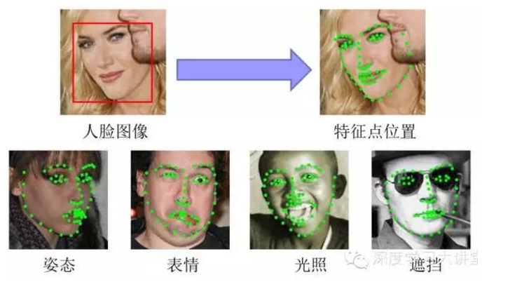
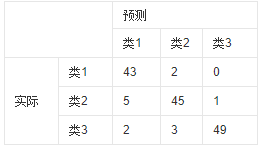

深度学习常见问答
Q1：Top-1和Top-5区别？
我们知道ImageNet有大概1000个分类，而模型预测某张图片时，会给出1000个按概率从高到低的类别排名 Top-1 Accuracy是指排名第一的类别与实际结果相符的准确率，而Top-5 Accuracy是指排名前五的类别包含实际结果的准确率。
Q2：目标检测分类
两阶段（Two Stages）：首先由算法（algorithm）生成一系列作为样本的候选框，再通过卷积神经网络进行样本（Sample）分类。
常见的算法有R-CNN、Fast R-CNN、Faster R-CNN等等
一阶段（One Stage ）：不需要产生候选框，直接将目标框定位的问题转化为回归（Regression）问题处理(Process)。
常见的算法有YOLO、SSD等等。
Q3：人脸识别中人脸对齐
人脸对齐任务即根据输入的人脸图像，自动定位出面部关键特征点，如眼睛、鼻尖、嘴角点、眉毛以及人脸各部件轮廓点等，如下图所示。

Q4：混淆矩阵
混淆矩阵也称误差矩阵，是表示精度评价的一种标准格式，用n行n列的矩阵形式来表示。具体评价指标有总体精度、制图精度、用户精度等，这些精度指标从不同的侧面反映了图像分类的精度。在人工智能中，混淆矩阵（confusion matrix）是可视化工具，特别用于监督学习，在无监督学习一般叫做匹配矩阵。在图像精度评价中，主要用于比较分类结果和实际测得值，可以把分类结果的精度显示在一个混淆矩阵里面。混淆矩阵是通过将每个实测像元的位置和分类与分类图像中的相应位置和分类相比较计算的。
如有150个样本数据，预测为1,2,3类各为50个。分类结束后得到的混淆矩阵为：
